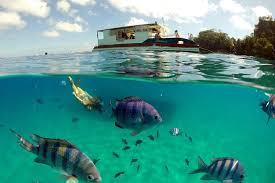
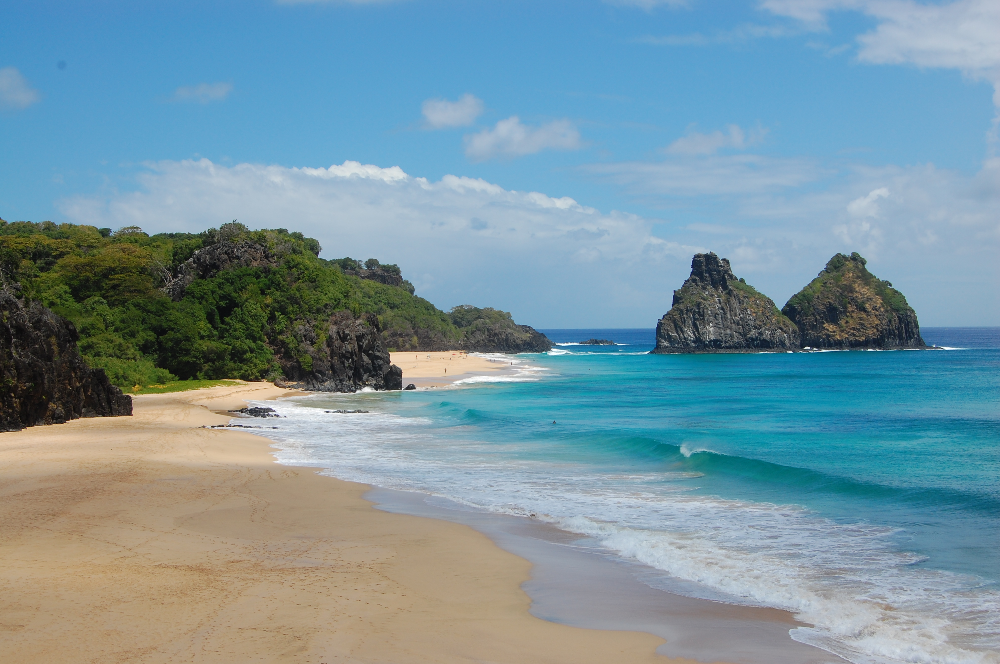
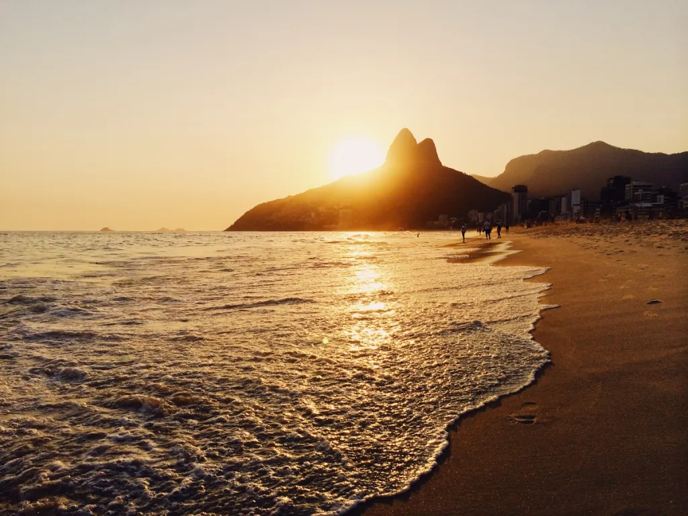
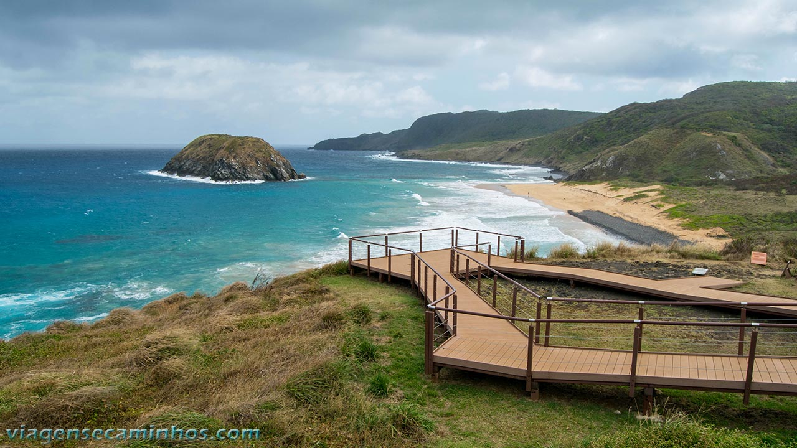
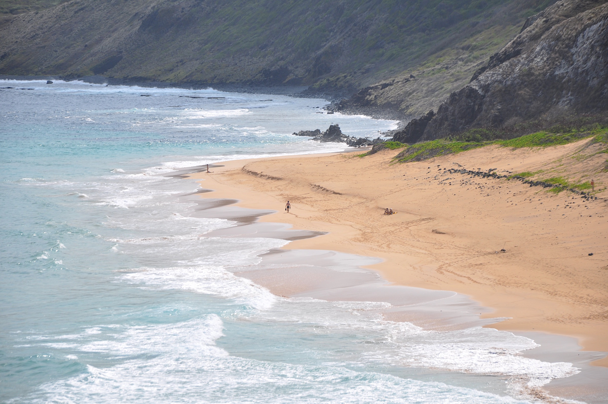
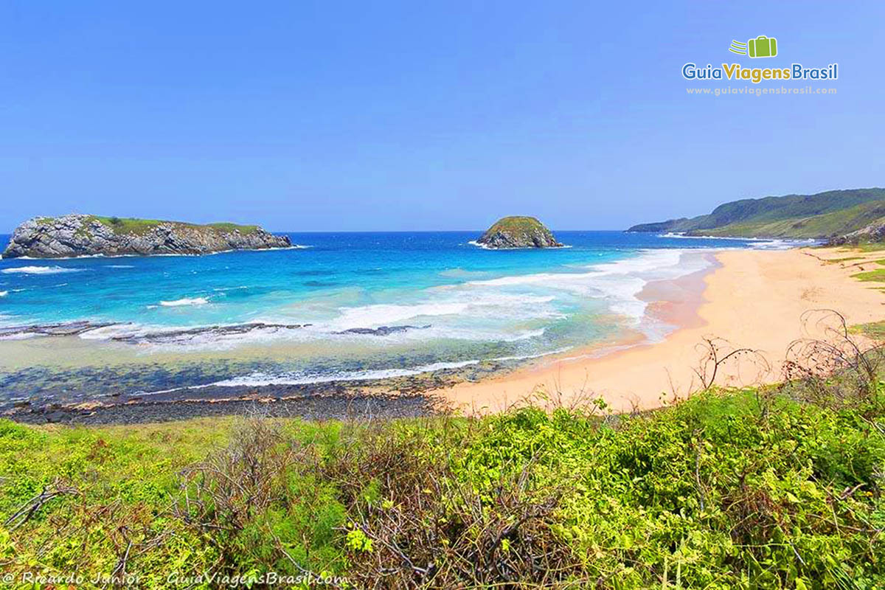
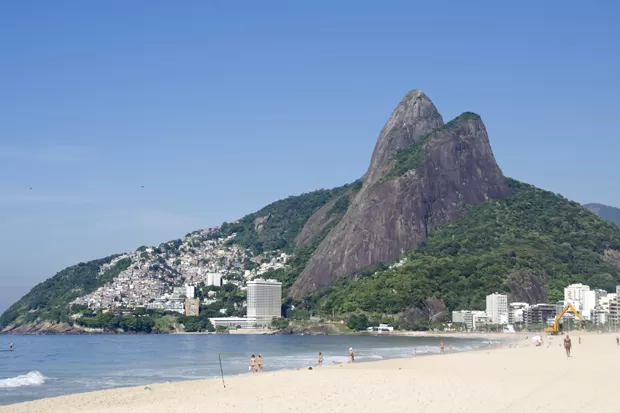
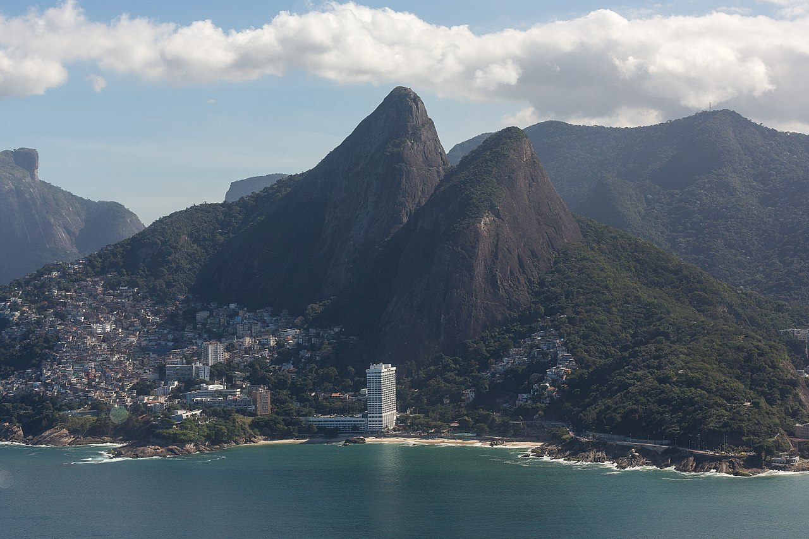
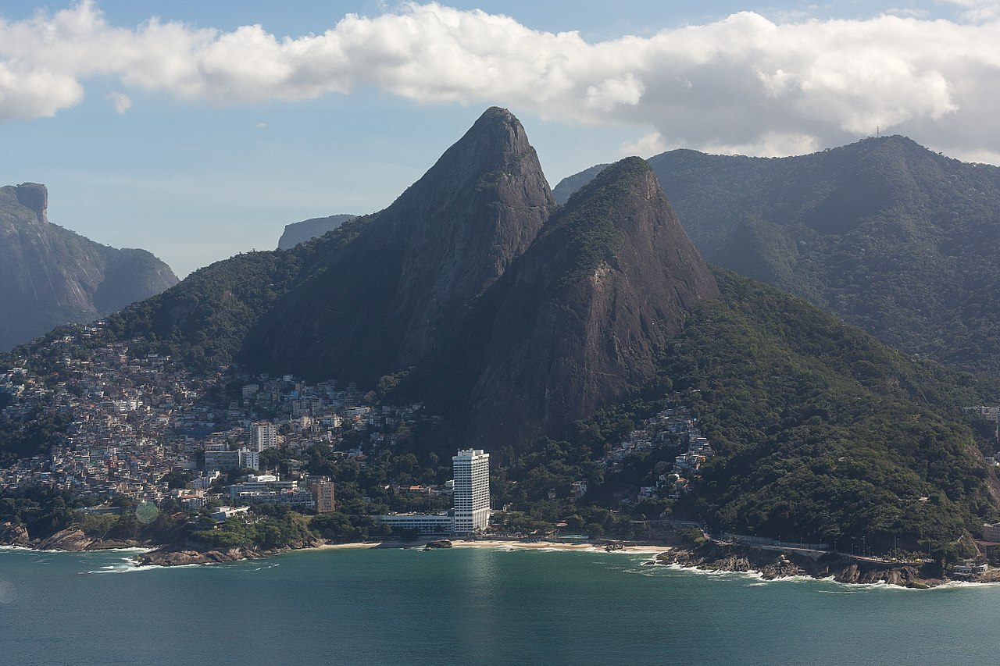

Venha Conhecer!
Fernando de Noronha é um destino de tirar o fôlego, um verdadeiro paraíso no meio do Atlântico. Com suas praias de águas cristalinas, areias douradas e paisagens exuberantes, o arquipélago é um convite à aventura e ao relaxamento. Mergulhe em recifes coloridos, nade ao lado de golfinhos, explore trilhas encantadoras e contemple o pôr do sol mais inesquecível da sua vida. Aqui, a natureza é a protagonista, proporcionando momentos únicos de conexão com o meio ambiente e com a tranquilidade. Em Fernando de Noronha, cada segundo é uma oportunidade de criar memórias que vão durar para sempre. Venha descobrir o melhor que o Brasil tem a oferecer! 🌴🐬☀️
Pontos Turísticos!
Baía do Sancho
Eleita diversas vezes como uma das melhores praias do mundo, a Baía do Sancho encanta com suas águas cristalinas em tons de azul e verde, perfeitas para mergulho e snorkel.
  Praia do Leão
Considerada uma das mais bonitas e selvagens de Noronha, a Praia do Leão é famosa por sua areia avermelhada e ondas fortes.
  Morro Dois Irmãos
Este é o cartão-postal mais famoso de Fernando de Noronha. O Morro Dois Irmãos é composto por duas formações rochosas gêmeas que emergem do mar e criam uma das vistas mais icônicas do arquipélago.
 
